关于李敖最详实的一篇文章，告诉你一个真实的李敖
2018年03月18日 14:42:45
来源：凤凰文化 作者：李昕
我做了一辈子的编辑，主要是为他人做嫁衣，自己写文章很少，主要是因为工作忙，没有时间。2014年7月我退休以后，闲下来了才开始写了两本书。编辑是个有故事的职业。我几十年和文人学者打交道，编辑他们的著作，每一本书背后，都有故事。我写的文章，大体和这些故事有关。从周有光、杨振宁、傅高义写起，又写了马识途、杨绛、韦君宜、吴敬琏等等。这些人与我都有交往，但是都不及我和李敖的交往那么多。可是我一直没敢写李敖，因为李敖比较难写。对于他，争议太大，弄不好成了趟浑水，自己也会担负很多骂名。
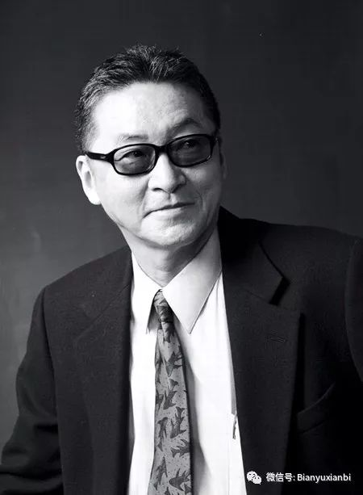
李敖先生
后来因为在杂志开专栏，编辑要求提供一些“有料”的稿件，而且催稿很急。我于是决定写一个系列的短小文章，总题目叫做《我所认识的李敖先生》，只写我和李敖的交往，不去碰那些争议的是是非非。但是文章在刊物上发表后，有一次碰到深圳报业集团出版社社长胡洪侠，他告诉我这篇稿子还可以写得更丰富一些，出一本书。这是我万万没有想到的。在他的鼓励之下，我把文章扩充，变为上中下三篇，上下两篇还是写我和李敖的交往，但中间加入了一个中篇，内容是专门回应那些是是非非的。事后我觉得这样安排也有必要，否则读者很难理解，为什么那么多人说李敖不好，而你一直这么推崇李敖，长期和他保持合作。加入了这一部分以后，这方面问题基本谈清楚了。同时作品也不再局限于我个人和李敖先生的实际接触，这对于读者认识李敖先生，可以提供更多的信息。
我很感谢出版社这本书的重视。编辑们想从这本书开始，策划一套短小精悍的人文学者的传记，在编排设计方面，出版社是下了功夫的。设计的用心，用料的讲究，一切都超出我的预期。我这个编辑见过的图书恐怕不能算少了，这本书在当前国内出版物中，可以当之无愧地说，是装帧设计相当精致的。其实它也没有使用什么特殊材料，不像有些书的设计为了追求做最美的书，就穿金戴银，弄得奢华无比，这本书的设计只是追求雅致，结果效果非常好，使人看起来很舒服。我原先对这家出版社缺乏认识，因为这一套书出手不凡，令我对它刮目相看。
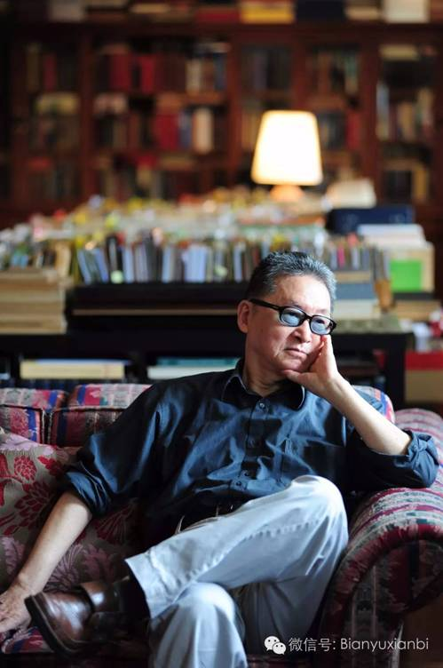
李敖在家中
一，我和李敖的交往
到2017年，我和李敖先生建立联系已经28年。作为编辑，我一共给他编过10来本书，有过很多愉快的合作，但是也常常争争吵吵，中间有不少恩恩怨怨的往事。总的来说，我的感觉是，和李敖合作，如果双方不了解，很难，他不是一个容易打交道的人，有时你会觉得他太多计较；但是一旦双方了解了，合作很容易，你又会觉得他是一个非常大气，非常通达的人。
我为李敖出书，自1989年始。当时我在人民文学出版社（简称人文社），出版的《独白下的传统》《北京法源寺》《李敖自传与回忆》等7本著作。这是李敖著作首次通过正式授权在中国大陆出版，也是首次引起巨大反响。不过在那个时期，我并没有见过他，只是和他电话联系，或者通过他委托的代理人签订著作出版合同。他的著作一出版就非常畅销，《独白下的传统》发行了20万本，其他几种也一般都在3-4万册。其实在今天看来，当时我是可以出版李敖更多作品的。但是没有做到，两个原因：一是1996年我去香港工作，人文社和李敖的联系中断了；二是我在人文社时，中国的出版界还很强调分工管理，受题材分工的限制，挑选李敖作品，还是以文学性强的作品为主。那时我们没有把他的一些时论性的杂文归入文学，所以既没有选择学术性很强的著作，也没有出版他那些政论。在今天看来，这样缩手缩脚，有一点作茧自缚，是留下了遗憾的。若干年后友谊出版公司把李敖作品接过去，出了40本一套的大全集，确实很有气魄。
1996年我被调到香港三联书店工作以后，继续和李敖联系，又在香港出版过《独白下的传统》和《传统下的独白》，还有两本李敖语录。为什么没有多出几本？因为香港市场太小，只有600万人口，很难独立支持一个单独的版本。如果同样的书有台湾版、大陆版，就没有必要再做香港版了。我曾经尝试把李敖的书卖到台湾去，但是我们在台湾的销售代理商不接受，说他们不敢卖李敖的书，怕找麻烦。于是我只能放弃为李敖出书。
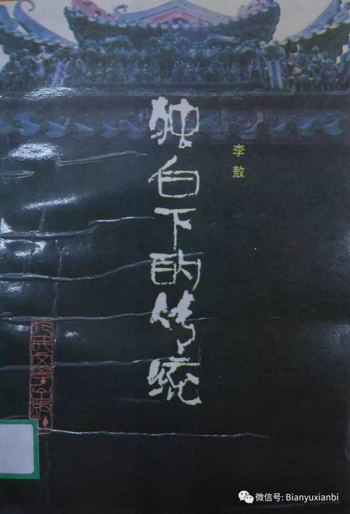
我为李敖出版的第一本书（1989年3月，人民文学出版社）
但这个时期我和李敖的联系并没有间断，有时会打电话去问候他。2003年我去台北参加书展，还去拜访他。那天他很兴奋，饶有兴味地和我一起畅想如何在台北投资创办一间香港三联书店的台北分店，由他来管理和经营。当然，香港三联是中资企业，台湾方面不允许中资登岛，此议很难付诸实施。而且，香港中资企业的投资管理很严格，我对此的发言权很小，所以对于李敖的畅想，只能是听听而已。
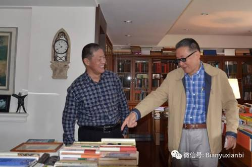
在李敖的书房里（2013年）
2005年，我到北京三联任职，此时又有机会和李敖合作了，我便和他商量出版一套十几本的李敖作品系列。因为三联的惯例是不出全集和选集，只是按作品系列的形式出版一些大作家、大学者的单行本作品（就像钱穆、黄仁宇、曹聚仁、徐铸成作品系列一样），我们觉得李敖也可以紧随其后。李敖当时在国内有大全集出版，但是不影响再出版一套精选集。李敖当时通过代理人陈又亮给我送来一纸箱作品，大概有四五十本，都是台湾版。我放在三联一个编辑室里面，请他们研究。那编辑室主任很想做，积极性很高，但是他们手中选题很多，一时顾不上，拖了半年左右没有回话。等到编辑室主任开出了一套大约十五六本书的《李敖作品系列》书单，准备和陈友亮商量签合同的时候，我忽然接到李敖一个电话。电话中他抱怨我们没有诚意，不是真心出版他的著作，最难听的一句话是说我们“占着茅坑不拉屎”。我知道他对我们有了误解，但任我怎么解释都无济于事。他要求我立刻把他的一箱书送回给陈又亮。这样三联就失去了一次和李敖进行合作的机会。这对我们当然是很遗憾的，但是由此我也更加认识了李敖的性格。

李戡18岁来京时的照片
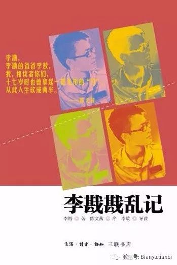
三联版《李戡戡乱记》
2009年，李敖的公子李戡到北京大学读书，带来了他的著作《李戡戡乱记》，三联同意出版，李敖很兴奋，为了给儿子保驾护航，他写了长篇推荐序置于李戡的书前。当时因为这本书要按规定送审，出版问题有些复杂。李敖因为不肯接受专家修改意见，差一点和我打官司。但是到最后矛盾化解，我们和好如初。通过这本书，我有了和李敖、李戡父子两人合作的经历。其实李敖的父亲李鼎彝也写过一本《中国文学史》，我曾经想过，是不是可以出版，如果可以，我就成了和他一家三代作者合作了，那也可以说是一段佳话。三联过去也有为一家两代、三代作者出书的情况。比如吴宓和女儿吴学昭，陈寅恪和女儿陈美延，邓广铭和女儿邓小楠，再如曹聚仁和儿子曹景行、女儿曹蕾，还有曹景行的女婿郑宸。但是毕竟李鼎彝的《中国文学史》在今天看来有一点过时，所以这件到今天没有做成。
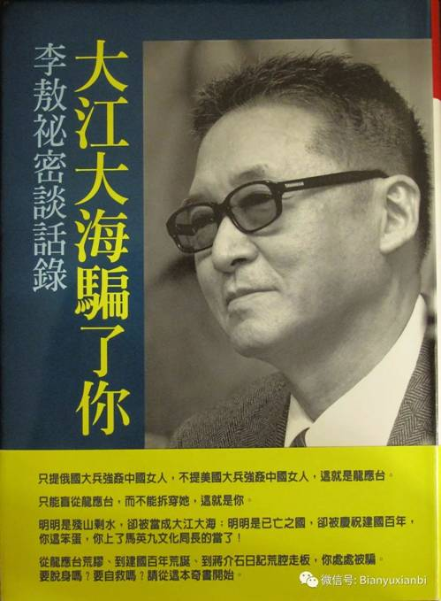
《大江大海骗了你》封面
2013年，李敖曾提出希望我们出版他的新作《大江大海骗了你》，但是我考虑这本书是专门和龙应台辩论的，龙应台的《大江大海：1949》按国内政策不能出版，那么李敖的书出版就成了无的放矢。我向他解释此事，他对我显然有几分失望，但也并没有苛责我。后来，我们又讨论过在三联恢复生活书店的时候，出版李敖的大全集。不过，因为李敖的大陆版权当时都没有到期，而我很快就退休了，所以最终他的大全集没有机会在我工作的出版社里出版。
2014年7月我退休了。我给他打了一个电话，告诉他我不能亲手出版他的著作了。但是我仍可以把他的著作介绍给别人出版。此后我的确帮助他在大陆做了一些联络版权的工作，为此和他的联系比以前更加密切，还经常在电话中聊天。为了写《李敖登陆记》，我曾就其中一些问题向他请教。这本小书写好后，也曾转请他过目，请他指谬。他对这本书的内容大体认可，并没有提出什么商榷意见，只是说，“这是你为我说好话的书，我不便表态。”于是我便斗胆把它拿来公开出版。
二，争议中的李敖
关于李敖的争议，大抵来自以下几个方面：
1，吹牛
谁都知道李敖比较喜欢说大话。我在这本书里面解释说，有时，说大话只是他的一种营销自己的策略，比如他为《独白下的传统》做的广告，说五百年来写白话文的前三名是李敖，李敖，李敖。这个方法奏效，图书出版第一天，就脱销了，马上重印，和这个广告有关。
我在书里面解释，李敖的口出狂言的原因：
“从李敖的角度考虑，他的张狂有合乎逻辑的成分。当年他从台湾国民党控制的舆论环境下突出重围，没有这股子狂劲儿是做不到的。他的狂，也曾经是被欣赏、被仰慕的。影星胡因梦嫁给他，爱的就是他的特立独行。但是后来，他屡屡被当局打压和排斥，人被关，书被禁，舆论被封杀，他渐渐落到自己不说狠话，别人便不理不睬的境地。他必须发表些振聋发聩的言论，才能引起社会关注。久而久之，以狂傲不羁的态度做惊人之语，渐渐成了他的语言风格。
社会对他，确有不公正。有一次他曾经对我说过，台湾一位知名文化人，编排了一个在台湾最有影响力的人物排行榜，是一份两百人的名单，这里面居然没有李敖！文化界对他的忽视使他无法容忍，他不甘于被埋没，总要设法使自己浮现出来。所以他的吹牛，在某种意义上，只是为了保持自己的社会影响力的一种手段。”
这是说他的不得已，为了对社会打压作出回应，他有时需要说一些大话。
当然，他的吹牛说大话，有时只是一种玩笑，李敖是个好开玩笑的人，你不能把他的话句句当真。
比如他说：
“我生平有两大遗憾：一是，我无法找到像李敖这样精彩的人做我的朋友；二是，我无法坐在台下听李敖精彩的演说。”
“当我要找我崇拜的人的时候，我就照镜子。”
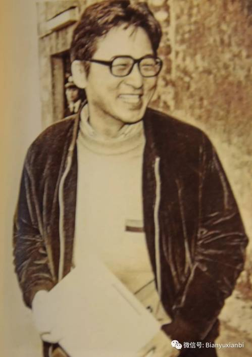
年轻时的李敖
这种大话，与其说是吹牛，不如说是一种幽默。表达的无非是他的一种自我欣赏态度。自我欣赏并不是缺点，只要他以事实为依据。李敖的才华、智慧和胆略，的确值得众人欣赏，他怕别人没有注意到，所以要用玩笑的口吻自己吆喝一下，让人听了忍俊不禁。我觉得，说说这样的大话，显示的倒是李敖性格的可爱。
再举一例。2013年我带着三联的两个年轻编辑去家里看他，他问人家，去没去过台湾故宫？两人说昨天去过了。李敖就说，那你们明天可以打道回府。因为台湾一共两件国宝，一件是故宫，另一件就是我。你们现在都看到了，可以回家了。
根据这样的话，能说李敖狂妄吗？这就是一个玩笑，表露他的顽童性格。
再比如，我重新组建生活书店，他说可以把他的大全集80卷都交给我出版。他怎么向我推销自己呢？他说，中国现代作家学者，100年以后，有几个人能留下来？鲁迅算一个，胡适算一个，我算半个。你出版我的书，100年以后，还是站得住的，出别人的书，就难说了。
我的理解，他说这样的话，也是为了推销自己，让你对他的著作引起重视而已。他心里并不认为他就是鲁迅、胡适后面排第三名的学者。
所以说，对于李敖吹牛的大话，需要听懂背后的意思。
2，花花公子
李敖给人这个印象，主要是因为他的性观念很开放，但这不意味着他的生活很放荡。他的确喜欢女人，家里到处贴裸体画。他的著作也常常用裸体画做插图。他喜欢谈女人，喜欢讲自己和女人的故事，有时甚至讲得很细致，给人感觉是他在生活上非常不严肃，是个花花公子。其实，他只是隐私观和一般人不一样，在这方面，别人往往讳莫如深，很多话题不敢谈不愿谈，但是李敖“无事不可对人言”，把一般人当作隐私的东西大事张扬还满不在乎。他其实是做人做得更加透明一点。他和真正的花花公子是不同的：
他和女人的交往，都是因为谈恋爱。他交了多个女友，都是在他年青的时候，单身的时候。他交的女友，都是单身女孩，交往的目的也是为了结婚，有的女朋友和他分手，是因为他坐牢，或者是因为他在政治上太危险。他一般不会和有夫之妇谈恋爱。同时，他在婚姻中并没有婚外恋。他和王小屯结婚已经24年，在这期间没有听说他再交另外的女友。
他对于别人作为有妇之夫还搞婚外恋其实是不以为然的。从他批判彭明敏作为大学教授乱搞女学生就可以知道他对这件事的态度。
所以大致上可以说，李敖好色而不淫。
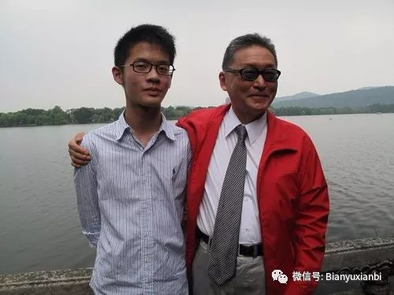
李敖和儿子李戡
3，伪善斗士
网上流传最广的是一个胡编的段子，说：
记者采访李敖，把他和王朔作比较：“你们很像，都爱骂人”。
李敖鄙夷地说：“他能和我比吗？他骂的都是什么人，我骂的都是能让我坐牢的人”。
有人把这话说给王朔听，王朔冷冷一笑说：“我敢骂能让他坐牢的人，他敢骂能让我坐牢的人吗？”
这个段子我求证过，李敖从没有就王朔发过言，他根本不知道王朔是谁。编这个段子的目的，是想告诉读者，李敖是“伪善”的，他作为自由主义知识分子，失去客观立场。他只敢于痛骂国民党，却不敢批评中共。
以我的了解，李敖确实不像龙应台那样批评中共，而且，他还公开说，要敢于看到“共产党的正面”。但是这里有几点需要说明：
首先，他不是看不到我们大陆的一些社会问题，但这些问题不是他关注的焦点。他关注的更多是台湾问题和两岸关系问题，所以他对大陆社会问题发言较少，但是他对于我们的两岸政策中存在的问题批评其实不少，有时也蛮尖锐的。
其次，在李敖看来，台湾的国民党和民进党都是成天攻击中共的。他不愿意参加这些人的大合唱。他从来就不是一个与国民党、民进党随声附和的人，强调独立思考。
再次，李敖年青时受到严侨老师的影响，向往共产主义，倾向革命。他对新中国一直是有深厚感情的。他现在80多岁，和我们国内80岁左右的许多老人一样，当年都有过激情燃烧的岁月，是曾经怀抱革命理想的一代。他们自青年时代起就对新中国有很多价值认同，许多理念一生坚持。
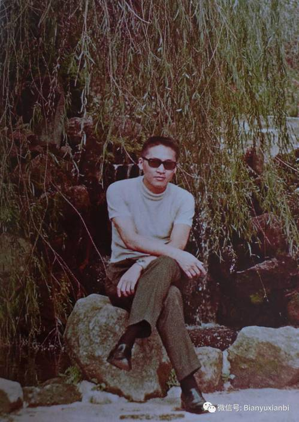
李敖在文星书店被查封之后
正是基于以上理由，我认为李敖的政治态度，不是伪善，而是一种真实的表达。他骂国民党多，批评共产党少，并不是敢不敢的问题，而是愿不愿的问题。那是他的主动选择。
但是，有人看到这一点，就编派李敖的故事。以他的名义发表文章，肉麻吹捧中共领导人，先是吹捧前领导人，然后又吹捧现任领导人，或者假借他的名义骂自己想骂的人，说一些自己想说而不敢说的话。于是，关于李敖，假文章满天飞，到了令一般读者真伪莫辨的程度。李敖的形象和声誉也因此而大为受损。许多人看了这些假文章便义愤填膺地谴责李敖，其实他们完全不了解真实的李敖。据我所知，李敖从来不写有关大陆的“捧”和“骂”的文章。他对中共领导人的认识，包括对毛泽东和当前领导人的认识，都是很客观的。
4，背叛朋友，侵吞朋友财产
这个罪名对于李敖的杀伤力最大。指的是导致李敖第二次坐牢的一场官司（1980年）。老朋友萧孟能控告他背信侵吞财产。萧孟能到南美去，准备移民，把自己的两套房产和一些字画交给李敖代为保管。结果他三个月就回来了，发现李敖扣留了他的财产不予归还，就告上法庭。
其实李敖是为萧孟能的结发妻子朱婉坚打抱不平。李敖和萧孟能、朱婉坚三个人曾经一起同甘共苦创办文星书店，有多年患难之交。现在萧孟能要移民，是因为另有新欢，借此甩掉结发妻子朱婉坚，准备卷包而走。李敖觉得这样对朱婉坚太不公平。他认为萧孟能的财产，至少应该留一部分给朱婉坚。萧孟能留下的财产，有字画和房产。字画，原本就是给李敖抵债的，不能再算是萧的财产。两套房产，李敖想转移给朱婉坚。可是当时有一套房子，按揭只交了一半。李敖当时正在和胡因梦谈恋爱，就和胡商量，先把这套房产转移到胡因梦名下。以胡的名义把房款付清，然后再转给朱婉坚。这时萧孟能回来了，要拿回这个房子，李敖说，我已经替你还清了一半房款，你要拿回去，钱要还给我。但萧不肯，就告了李敖。
最后李敖被判刑6个月。原本这个官司李敖是不可能输掉的。输掉的原因就在于国民党借机打压李敖。这时（1980年）正是台湾解严之前社会动荡时期，党外要求民主的运动风起云涌。此时李敖也申请到一本牌照，出版《千秋评论》杂志。国民党害怕李敖为民运呼风唤雨，于是封杀他。当然李敖输掉官司，和胡因梦做了伪证有关。胡因梦她迫于国民党的压力（不让她演戏），帮助萧孟能做了伪证，说李敖要把萧的房子给她。这件事导致李敖和胡因梦离婚。
后来李敖出狱后，为了报复萧孟能，他接连三次状告萧孟能，为此萧两次坐牢，第三次宣判之前，他逃离台湾，成了通缉犯，从此没敢再回台湾。2004年死于上海。
这场官司，台北高级法院1988年曾经撤销原判，给李敖平反。国民党中央日报也发了报道。从此真相大白，大家都知道李敖是被冤枉的。
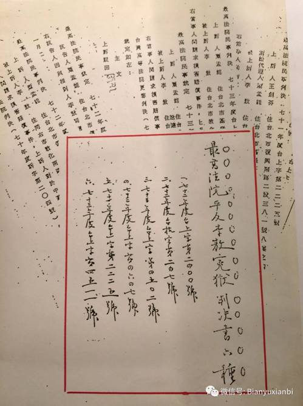
台北最高法院平反李敖案判决书六种
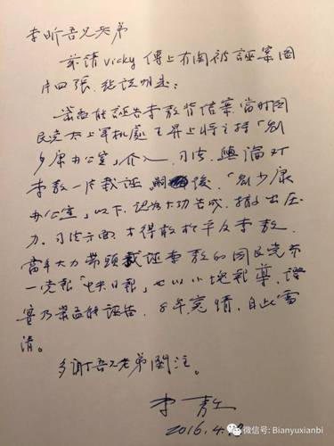
李敖为说明诬告案写给我的信
可是2012年，台湾历史学家许倬云在中国大陆出版的一本回忆录又提到李敖背信侵吞朋友财产。李敖又和许打了一场官司。法院判决许赔偿李敖200万台币并公开道歉。事后我问过李敖先生，这个官司最后是什么结果？李敖告诉我，许倬云后来向他寻求私下和解，支付给他的赔偿款还不止于200万台币。
关于这件事，中国大陆的许多读者至今不明真相。原因是受到某些采访萧孟能的文章的影响。萧孟能为了躲避官司，晚年流亡大陆，对采访者讲了些一面之词。采访者写文章，不做调查核实，公然发表诬陷李敖的文字，是极不严肃的行为。李敖原本也可以像起诉许倬云一样，在内地追究传播不实之词的文章作者和出版社的责任，但是他没有这样做，因为他是非常高傲的人，不想失掉自己的身份。对他来说，挑战只能面对强者。许倬云是他的老师辈人物，李敖当然不能容忍其胡说。但是内地的那些无名作者，他实在没有放在眼里，觉得和他们打官司，打赢了也没有意思，因为他们不配作为自己的对手。
三，我看李敖
1，关于李敖的学问和著作
李敖是文化学者、学问家，作家，更是思想家。
他读书很多，自己说他的同龄人（80岁）没有人比他读书更多。至少1万多本，也许有2万本。他读书很快，一方面博闻强记，一方面有很好的读书方法，所以读书效率比一般人要高。你听他谈话，那样旁征博引，材料是哪里来的？当然是靠图书。你由此不能不佩服他读过书还能记得牢。
他也是一个“写家”，大约写过200种著作。我们平时说一个人著作等身，那是一种夸张形容，极而言之，说明某人著作多而已。但是李敖的著作以尺做量度，确是不止于“等身”的。他身高172cm，著作多于200本，每一本超过1cm，总高度在两米以上。2015年他80岁出版80卷全集，摆起来够一个书柜。现在他又有5卷要追加进去。此外，他编辑的书还有很多，当年在“文星”时期，他主持一套文库的编辑，其中就有《胡适选集》16卷以及《胡适语萃》（均与《胡适文存》不重复）、《傅斯年选集》10卷、《蔡元培选集》6卷、《蒋廷濮选集》6卷、《左舜生选集》6卷、《吴敬恒选集》9卷等等。他后来还编过《千秋评论丛书》43卷，《万岁评论丛书》40卷。所以李敖其实还是一个编辑家，这是一般读者都不知道的。
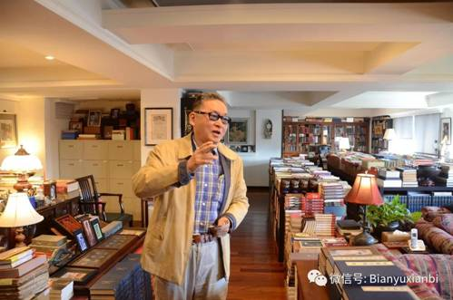
李敖在书房里
李敖的学问，主要集中在中国近现代史研究方面（也包括台湾研究），最重要的著作，是《孙中山研究》、《蒋介石研究》、《蒋经国研究》，《胡适研究》和《国民党研究》《民进党研究》等等。这中间很多是大部头、多卷本，都是有分量有系统的学术著作。他对中国近现代史研究贡献很大，特别是在台湾所谓“戡乱戒严”的漫长时期，在大陆由于受到左倾思潮禁锢，学术史料缺乏、研究思想封闭的年代，李敖的这些研究不仅对台湾而且对大陆都是开风气的、独辟蹊径的，可谓异军突起，振聋发聩，其中许多观点启发了一代甚至两代中国学者。
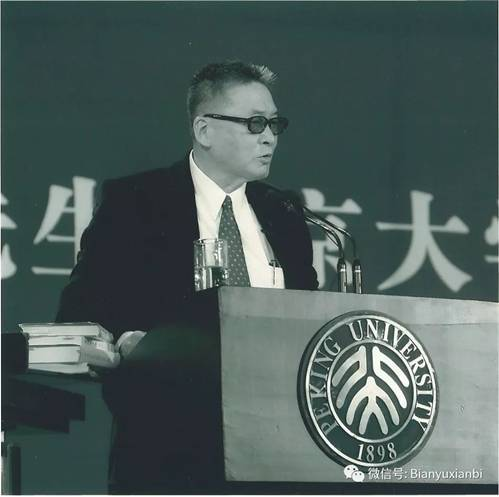
李敖在北大演讲（2005年9月）
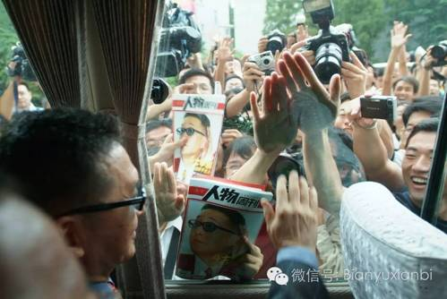
李敖来到复旦大学（2005年9月）
2005年9月李敖首次回到大陆
他更多的文章是时政类的，针对当前现实发言，用评论、随笔（或者叫杂文）的方式来写，直抒胸臆，有感而发，嬉笑怒骂皆成文章，以社会批判的论述为主，时而锋芒毕现，常常入木三分。这方面他有一点像鲁迅。所以有些学者把他称为杂文作家。
在文学创作方面，他的确也写过像《北京法源寺》《第73烈士》《上山，上山，爱》等小说，这些作品带着学者著述的鲜明印记，可以说也是自成风格，独具价值。但是我以为杂文、随笔更能代表他在文学上的风格特色。
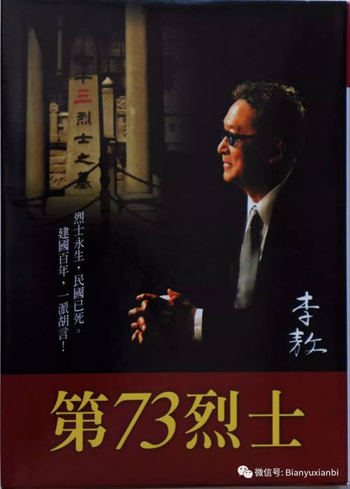
历史小说《第73烈士》
虽然他对中国历史文化有非常深刻的洞见，但他不像钱穆、余英时、许倬云这些人以写中国文化研究的专著为主，他的兴趣在当前时政方面，他的关注点在现实当中，即使他谈历史，着眼点也在今天；他研究孙中山、蒋介石、蒋经国、胡适，用意也都在针对现实问题。他本质上是一个很激进的社会革命者，内心中要促进社会改造和进步的愿望十分强烈。所以他写文章，总要表达对当前现实的批判性观点。他的文章有很强的战斗性，常常是檄文，旗帜鲜明地亮出自己的立场和态度。所以如果做整体评价，与其说李敖是学问家，不如说他是思想家。他的著作总能给人思想智慧，总能启人心智，发人深省。实事求是地说，他可以称得上引领社会思考的一代启蒙思想家。在台湾，他不属于任何党派（虽然他是一个坚定的“统派”），不能被归之于任何阵营，他也不愿意代表任何人发声，他总是单枪匹马，孤军奋战，左右冲突如入无人之境，然而，他的影响力很少有人可以匹敌。这种力量来源于思想。
此外，他的白话文的确写得漂亮，让人读了有痛快淋漓的感觉。他的《独白下的传统》的序言《快看独白下的传统》，可以算是他的白话文的代表作。所以我出版《李敖登陆记》，把这篇文章作为附录。
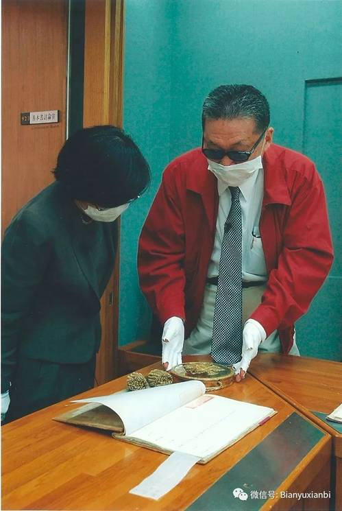
李敖在台北故宫看江宁条约
2，关于李敖的性格和为人，也有很多鲜明的特点。
首先是特立独行，无所畏惧。
试想，当年在当局的高压之下，李敖被长期封杀，有90多本书被先后查禁，但是他被禁了还出，屡禁屡出，这是需要胆量的。因为每出一书其实都冒着坐牢的风险。（当年在国民党以“戒严”名义狂捕滥杀的时期，抨击时政的文章是会触犯《惩治叛乱条例》第七条的，这一条条文明确规定：“以文字、图书、演说，为有利于叛徒之宣传者，处七年以上有期徒刑。”）。除此之外，其实他也有被暗杀的风险，国民党当时制造过暗杀不同政见者的案件，这是世人皆知的，而李敖的家里当年就曾经被安装过窃听器，以至于多年以后，他在家中生活，腰里还挂着三件宝贝：相机、军刀和高压电枪，时时想到需要防身。直到今天，他反台独，也还是有人威胁他，给他两次寄恐吓邮件。先是寄来一包鲜血，再是寄来子弹。然而他的对策是公开到电视上向对方喊话，请人家寄炸弹来！对方于是不敢回应。
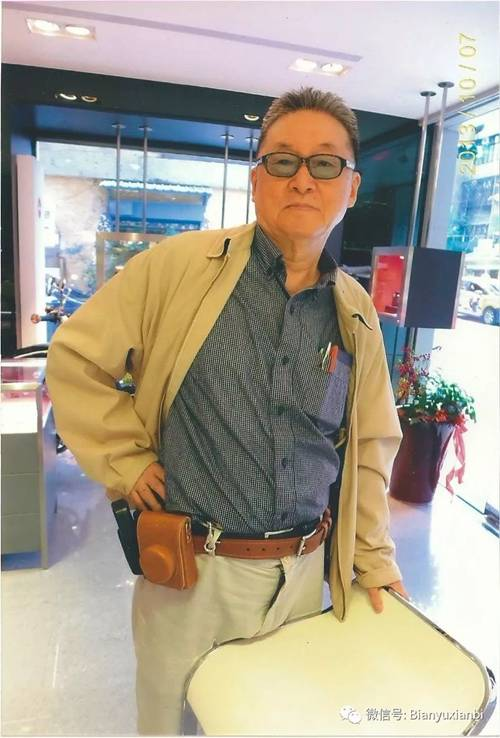
李敖腰间的三件宝：相机、军刀、高压电抢
当然，说他特立独行，独往独来，不屑与任何党派为伍，还常常因为骂人、说话不留情面，得罪一些人，但这并不等于说他很受孤立。他在台湾的朋友很多，国民党、民进党里都有他的老友，李敖和他们争论归争论，情谊归情谊。正是因为这样，有些人和他政见不同，仍能保持来往；有些人曾经被他骂过，心里却也并不计较。我所认识的许多港台文化人和他的私人关系都很好，尽管他们和我谈论李敖，也很坦率地表示对李性格或言论的某些不敢苟同，但是他们心底里对李敖还都有很深的敬意。
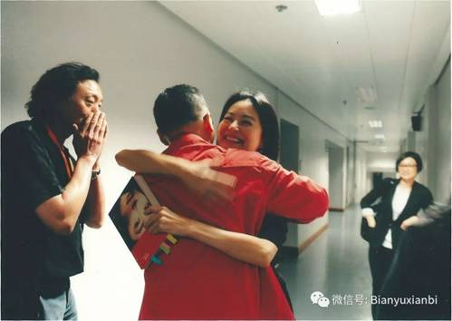
李敖和林青霞见面
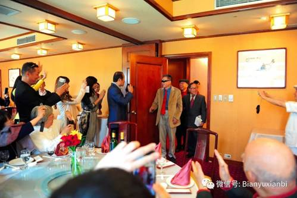
老朋友们来为李敖祝贺80大寿
其次是机敏、聪明过人，同时幽默风趣，反应快，脑子特别好。
比如，我对他说，我在大陆不出版你的《大江大海骗了你》，是因为龙应台的《大江大海：1949》也没有出，你的书批判龙应台，总需要有靶子呀。他马上说，你认识杜林吗?你读过杜林的书吗？那你们为什么要出版恩格斯的《反杜林论》？
再比如，我问他，许倬云说你出卖朋友，你告他诽谤，让他赔偿200万，为什么大陆上有人说同样的话，你不告他们？他回答，“猫是抓老鼠的，不抓蟑螂。”
这种机智，非常人所有。
在与他的接触中，我发现他是一个达观的人，快乐的人，一个活跃的人，爱开玩笑，老顽童性格。和他在一起聊天，是很开心的事情，总是笑声不断。他的性格很可爱，这是他拥有很多朋友的重要原因。
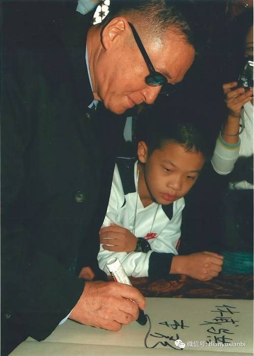
2005年9月李敖和李戡在天安门城楼上
其三是豪侠仗义、乐于助人，自称善霸。
“善霸”是李敖自创的一个词，与恶霸相对。行善到了霸道的地步。他身上有一点中国传统文人的江湖义气。一方面敢爱敢恨，嫉恶如仇；一方面知恩图报，打抱不平。
比如他看到自己的老师、台大教授殷海光脸色不好，就强迫性地逼着殷海光去医院看病，霸道得不容分说，让老师跟着他走，做检查，一查就查出胃癌。后来给老师治病，他全部买单。
关于他打抱不平，不能不提苏荣泉的被害的事。苏这个人我认识，他跟随李敖多年，是李的小兄弟之一，90年代做过李敖出版社社长，李敖的版权代理人，几次来北京找过我。他后来离开李敖自己去做信贷生意。因为这种生意有时要和黑社会打交道，他觉得自己不安全，就去上保险，分别在8个保险公司上了巨额保险。结果真的因为发生商业纠纷，他在泰国旅游的时候被枪杀。他的家属向保险公司索赔，8个保险公司建立攻守同盟，理也不理，信都不回，家属无奈，只得向李敖求助。李敖念及苏荣泉过去对于自己的情谊，出面和8家保险公司交涉，采用各个击破的办法，一共索回赔偿款2亿3千万台币（相当于人民币5000多万）。
再如大企业家辜振甫，他是跨越商政两届的知名人物。后来做过台湾的海基会会长，汪辜会谈的辜就是他。此人本是台湾巨富，却偏偏亏待了他的大舅子一家人。辜振甫夫人严倬云的哥哥严侨是李敖的中学老师，严侨50年代因为涉嫌共产党被国民党抓进监狱，严侨的夫人向辜振甫求助，竟被拒之门外，于是她只能去给外国人当保姆。对此事李敖看不过，就找茬和辜打官司。他买了辜的公司股票，发现辜的公司有违规操作，于是向辜振甫和公司股东致函，扬言要法庭相见。辜振甫自知理亏，想要息事宁人，于是给了李敖一笔赔偿金，李敖则在第一时间将拿到的钱给了严师母。
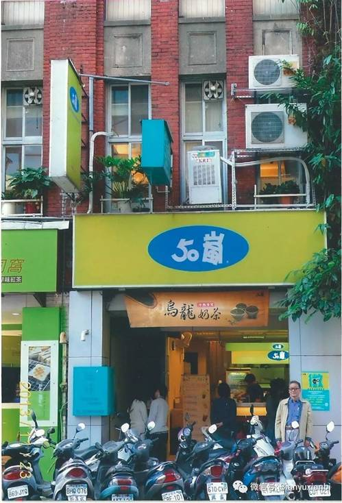
李敖在文星书店旧址前
还有萧孟能的官司，前面说过，就是因为李敖要为萧的原配夫人朱婉坚打抱不平，弄得自己受诬陷，坐了6个月的牢。他出狱后反过来告萧孟能。这显示出李敖有仇必报、绝不宽恕的性格。但是他的报仇其实也有限度，是讲分寸的。这仍然反映他有情有义的一面。对萧孟能，他并没有赶尽杀绝，只是要萧孟能和他一样，也坐满6个月的牢房，就算扯平。但是告了两次，法院虽然都判萧坐牢，但是判得较轻，加起来两次只坐牢五个月零20天，所以李敖又告第三次。这时他在法庭上遇到萧，还说，“只要你再坐10天，将来你死了，我就买一个金棺材送给你。”但是萧没有选择再次坐牢赎罪，而是径自出走，为了逃避10天的牢狱，竟然终身流亡在外，客死他乡。这个结果，也不是李敖所期望的。
说是绝不宽恕，也有一个例外，那就是对胡因梦在萧孟能案中作伪证，他曾表示可以原谅，因为能体会胡在当时所遭受的压力。他对胡因梦也没有“恩断义绝”，还在胡50大寿时送去50朵玫瑰。胡60岁时，他还要再送60朵玫瑰，可惜那时胡因梦来了大陆，他找不到人，于是在微博里感叹说，因为“云深不知处”，玫瑰送不出。这也是他有情有义的故事。
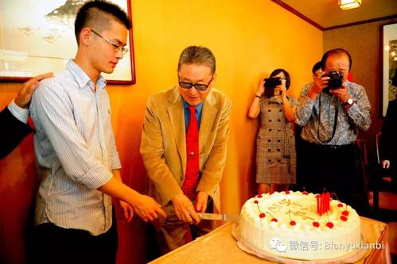
李戡筹办了李敖80岁寿宴
最后我还是要说，关于李敖，我的《李敖登陆记》的介绍只是挂一漏万的。一方面是限于文章的题旨和行文的结构，很多问题我不能展开写，另一方面应该承认，我对李敖的了解也还是比较粗浅的。我对他的研究很不够。其实在我看来，无论从人格、思想、学问、才华和贡献这几个方面中哪个角度，李敖都是值得研究、值得立传的人物。国内文化界熟悉李敖思想和学术的学者作家不少，相信将来一定会有与李敖的成就和地位相称的研究著作和人物传记出版。
2016年11月
（本文是李昕2016年11月在《李敖登陆记》新书发布会上的讲话，刊登于微信公号“编余闲笔”）

《李敖登陆记》，深圳报业集团出版社2016年11月出版，各大网站有售。
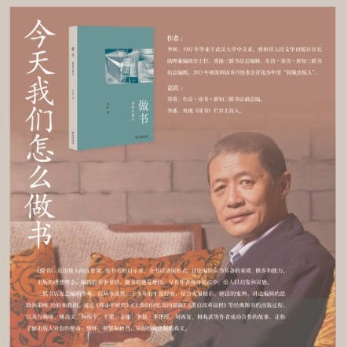
本文作者李昕